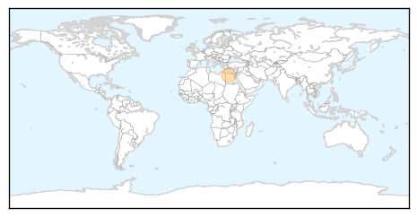

Ebola
30-Day Web Trend
0 alerts, 0 warnings
30-Day Twitter Trend
0 alerts, 0 warnings
Article Locations
Article Confidences
Top Articles:
- 1.000
- Ebola – 10th Sierra Leone doctor dies from the deadly virus
- 1.000
- Third Sierra Leone doctor dies of #Ebola
- 0.999
- Cuban doctor leaves Geneva after recovering from Ebola
- 0.999
- Cooler box-equipped motorbikes donated to UN will speed up Ebola testing process in West Africa
- 0.999
- Two Sierra Leone Ebola doctors die in one day
- 0.999
- Simple preventive measures may help stem Ebola
- 0.999
- At home and cured of Ebola, Cuban doctor vows to return to West Africa
- 0.999
- At home and cured of Ebola, Cuban doctor vows return to Africa
- 0.999
- Tenth Sierra Leone doctor dies of Ebola
- 0.999
- No more Ebola cases in Mali, says president
- 0.999
- Cuban doctor cured of Ebola vows to return to Africa 'to finish what I started'
- 0.999
- Recovered from Ebola, Cuban doctor returns home
- 0.999
- Cuban Ebola patient recovers after treatment in Geneva
- 0.999
- Cooler Box-Equipped Motorbikes Donated to UN will Speed up Ebola Testing Process in West Africa
- 0.998
- At home and cured of Ebola, Cuban doctor vows return to Africa
- 0.998
- Ebola response lags behind: MSF
- 0.998
- Cuban Doctor Cured of Virus Wants to Return to West Africa to 'Finish' What He 'Started'
- 0.998
- Cuban Doctor Back Home after Beating Ebola
- 0.997
- At home and cured of Ebola, Cuban doctor vows return to Africa
- 0.997
- CAF deploys medical team to Ebola-stricken Sierra Leone
- 0.997
- U.N. peacekeeper with Ebola arrives in Netherlands for treatment
- 0.996
- U.S. Healthcare Professionals
- 0.996
- Ebola claims 11th S/Leone doctor
- 0.995
- Ebola czar Ron Klain to leave position by March 1: report
- 0.995
- As Ebola Rages, Poor Planning Thwarts Efforts
- 0.994
- Norway to carry out fast-track trials of Ebola vaccine
- 0.993
- Two Sierra Leone Ebola doctors die in one day
- 0.991
- Basic medical care of Ebola patients is neglected and must improve
- 0.990
- The outbreak persists, but Obama’s Ebola Czar is moving on « Hot Air
- 0.989
- At home and cured of Ebola, Cuban doctor vows return to Africa
- 0.983
- Cuban doctor cured of Ebola, wants to return to Africa
- 0.977
- King County resident tests negative for Ebola
- 0.977
- King County resident tests negative for Ebola
- 0.976
- Latest Ebola News: Ebola suspect in Taiwan turned to be a hoax
- 0.975
- Petawawa medical team heading to Sierra Leone
- 0.975
- Dallas Ebola patient's ER doctor missed high fever
- 0.975
- UPDATE 4-At home and cured of Ebola, Cuban doctor vows return to Africa
- 0.974
- Health officials testing man for Ebola in Seattle
- 0.971
- Dallas Ebola patient's ER doctor missed high fever
- 0.968
- Dallas Ebola patient's ER doctor missed high fever
- 0.967
- Africa Union health workers arrive in Liberia
- 0.965
- Cuban doctor returns home after being cured of Ebola
- 0.961
- Teenager sparks Ebola emergency in Taiwan with claim he ate Nigerian bats
- 0.960
- N. Korea's Ebola travel ban takes toll on Chinese tour firms
- 0.958
- Invisible governments
- 0.955
- Landmark patient doesn't have Ebola
- 0.950
- EU Commissioner: Greek Doctors Ready to Help Contain Ebola Epidemic
- 0.950
- EU Commissioner: Greek doctors ready to help contain Ebola epidemic
- 0.948
- Ebola-free Cuban doctor back home, vows return to Africa
- 0.943
- Cuban doctor back home after being cured of Ebola
Showing top 50 articles...
Top Tweets:
- 0.858
- .@WHO factsheet provides the most current information on the Ebola virus http://t.co/zg9tgxsTHQ
- 0.777
- RT: Sierra Leone MOH Ebola Update Dec 7: 25 New Conf. Cases & 25 Susp.; 39 New Conf. Deaths http://t.co/b5X8SUStDp
- 0.776
- RT: Ebola in Sierra Leone: 11 infected doctors, one survivor http://t.co/Q0m8F2NbWm
- 0.750
- RT: This Week in Virology TWiV 314 is up, recorded at Albert Einstein: Ebola virus, virus entry, and HIV-1 http://t.co/MydAiyb3bO
- 0.723
- Bravo! Nigeria sends +175 medical workers to Sierra Leone & Liberia to combat Ebola. h/t http://t.co/bGrhhmPubU
- 0.699
- RT: Ebola: Nigerian medics deploying to Sierra Leone to help w/ response to outbreak http://t.co/x01sDXTN8b http:/…
- 0.630
- Two Sierra Leone Ebola doctors die in one day http://t.co/Z8IicM54MX
Measles
30-Day Web Trend
2 alerts, 3 warnings

30-Day Twitter Trend
0 alerts, 0 warnings

Article Locations
Article Confidences

Top Articles:
Top Tweets:
-
No tweets found for Dec 07, 2014